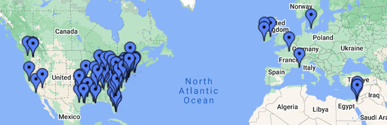

Lists of Stuff
Data starts at the home. I maintain a number of documents that are basically journals of stuff I have done or seen. Some of this may one day become a data project, some of this is merely because life is a very long time and it’s nice to have a comprehensive record of these things for future reference.
Show Log
Since the start of 2008, I’ve maintained a text document of every band I’ve ever seen live. Because to collect something is to seek it out, I’ve been to a lot of shows over the years. At least 20% of my motivation for building this site is to get this somewhere online at last. Anyway, it’s available here.
Sports Lists
I’ve kept track of several different aspects of sporting events I’ve attended.
Games Attended
This is essentially the same as the concert list, but sports. It is available here. I also maintain a profile on the app AC Momento, if you’d like to look me up on there.
Baseball
You must understand by now that I am someone who simply must know which players I have seen the most in my baseball-attending career. As I’ve now been going to games for a pretty long time, it’s always satisfying to realize I had actually seen this random relief pitcher a decade ago on another team. There’s probably no need to publish the full list, but here’s my top ten most-seen players (plus ties) as of the end of the 2024 season:
| Batter | PA | AB | R | H | BA | RBI | BB | SO | 2B | 3B | HR | SB | HBP | Games | Team(s) |
|---|---|---|---|---|---|---|---|---|---|---|---|---|---|---|---|
| Juan Soto | 37 | 32 | 3 | 6 | 0.188 | 7 | 5 | 8 | 1 | 2 | 9 | WSN | |||
| Andrew McCutchen | 37 | 30 | 4 | 4 | 0.133 | 2 | 6 | 3 | 1 | 3 | 8 | PIT, MIL | |||
| Brandon Nimmo | 36 | 29 | 6 | 8 | 0.276 | 2 | 7 | 5 | 4 | 8 | NYM | ||||
| Lane Thomas | 34 | 30 | 7 | 9 | 0.3 | 3 | 4 | 6 | 1 | 2 | 5 | 8 | WSN | ||
| Luis García Jr. | 33 | 32 | 3 | 8 | 0.25 | 0 | 1 | 4 | 2 | 8 | WSN | ||||
| Ryan Zimmerman | 32 | 29 | 3 | 5 | 0.172 | 4 | 3 | 9 | 2 | 8 | WSN | ||||
| Pedro Álvarez | 32 | 28 | 3 | 6 | 0.214 | 7 | 4 | 9 | 3 | 2 | 8 | PIT | |||
| Pete Alonso | 31 | 30 | 4 | 6 | 0.2 | 6 | 1 | 10 | 1 | 1 | 7 | NYM | |||
| Starling Marte | 28 | 25 | 5 | 8 | 0.32 | 0 | 2 | 5 | 6 | 1 | 6 | PIT, NYM | |||
| David Wright | 28 | 24 | 4 | 6 | 0.25 | 5 | 2 | 5 | 2 | 3 | 2 | 7 | NYM | ||
| Francisco Lindor | 28 | 22 | 4 | 6 | 0.273 | 6 | 5 | 3 | 1 | 2 | 2 | 1 | 6 | CLE, NYM |
There’s a pitcher-focused list as well, but it’s not nearly as interesting; I don’t go to enough games to have seen any starter in my life more like two or three times. But because I have the numbers, it’s worth sharing that as of the end of the 2024 season I have seen 501 distinct hitters and 239 distinct pitchers.
Go Mets.
Basketball
Baseball is a game where counting stats accumulate slowly, and an amazing night (say, four hits) isn’t that much bigger of a number than a good game (two hits) or a bad one (no hits). Basketball - especially the NBA - is much more prone to stars having big, memorable nights and putting up gaudy numbers. With that in mind, I also track individual performances I’ve witnessed in person with the NBA (and college ball), but what I care most about is the best individual night I’ve ever seen. Here are the ten best NBA performances I’ve ever seen:
[to come]
Running Mileage
Places I’ve Been
The above list of lists is not exhaustive! There are plenty of other personal-documentation things I do or have done that just don’t need to be public. Here’s a screen from an interactive Google Map I maintain of everywhere I’ve spend the night:

And here’s just North America: